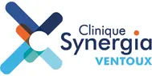

À propos de moi
Je suis étudiant en BTS SIO, en alternance dans une entreprise spécialisée dans la chirurgie dans laquelle j'occupe une place de technicien informatique. Passionné par la technologie et l’innovation, je souhaite devenir développeur full-stack.
 Clinique Synergia